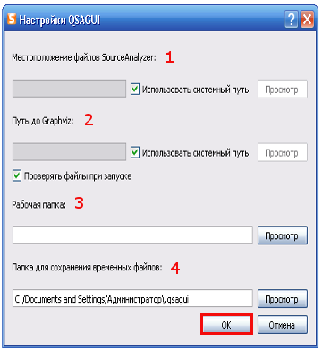

Содержание
Что такое QSAGUI?
Начало
Создание графа вызовов
Соединение графов вызовов
Очистка графа вызовов
Обновление графа вызовов
Получение списков файлов/функций
Показать граф вызовов
Настройки
|
Настройки
Используйте "Настройки" -> "Настройки..." или кнопку "Настройки" на панели инструментов.

1. Укажите путь к файлам SourceAnalyzer. Выберите "использовать системный путь", если SourceAnalyzer обнаружен в системном пути.
2. Укажите путь к Graphviz. Выберите "использовать системный путь", если Graphviz обнаружен в системном пути.
3. Вы можете указать рабочую папку. Эта опция для выбора файлов/папки. Если Вы ее не определите, то последняя открытая папка будет сохранена.
4. Если Вы не укажете папку для сохранения временных файлов, то они будут сохранены в основной папке в ".qsagui".
Нажмите кнопку "OK".
|